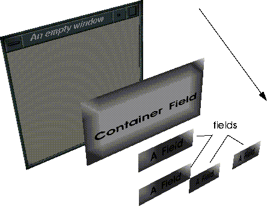

*standard-color-defaults*, a system variable which provides values for many important window attributes.
ui:*root* variable.

Menus can be defined inside one of two types of windows: applications windows and pop-up windows. Each are basically similar, with the exception that applications windows have their own processes, and persist until explicitly destroyed. Pop-up windows, on the other hand, are temporary, and are destroyed when the user exits the menu.
Types of Windows
Applications Windows
Floating menus are defined inside of application windows. Application windows themselves are similar in most respects to normal X windows. Figure 5.1 shows the anatomy of a typical application window.
We'll describe how to define and create application windows later on in this section.
Pop-up menus
When you want a less permanent menu, perhaps one which appears in response to a specific user action, use a pop-up menu. These menus are defined inside of pop-up windows. pop-up windows lack some of the control features of application windows, such as the window menu button, the minimize and the maximize button. However, most of the keystroke equivalents work the same way they do for application windows (e.g., ALT-F7 to move, ALT-F9 to minimize, etc.)
The N·World menu system is based on an object hierarchy. The top-level object in a given menu hierarchy is called the root-field. The root-field is equivalent to the window within which the menu is defined. All of the fields defined inside of the window are contained by the root-field. Fields contained by a higher-level object are said to be sub-fields of that field.
Menu Object Hierarchy
The bottom of the menu hierarchy is occupied by the fields with which the user interacts.

Creating Application Windows
Application windows are created using UI:MAKE-PORTABLE-WINDOW. The general pattern for creating an application window is outlined in the code segment below. Note that, in addition to defining the window, this general form contains provisions for:
*standard-color-defaults*, a system variable which provides values for many important window attributes, including default colors, sizes, and fonts.
The other characteristics of the window are controlled with keyword arguments. In the above example, the title of the window "An Empty Window", is defined with the :label keyword. When the window is minimized, the icon will have the label "EmpWin", as specified with the :icon-label keyword (Figure 5.4). You can also specify an image for the icon with the :icon-filename option.
Application Window field properties
Table 5.1 describes some of the more common keyword arguments to ui:make-portable-window
Defining Pop-up Windows
The generalized form for defining pop-up windows , summarized in the code segment below, contains provisions for:
*standard-color-defaults*, a system variable which provides values for many important window attributes.
ui:*root* variable.
Pop-up Window field properties
There are significantly fewer field properties for pop-up windows than for application windows.
| Parameter | Options/Arguments | Description |
|---|---|---|
|
:selected-field
|
field-id
|
The specified field is automatically selected when the menu is drawn
|
Example
The file /usr/local/ngc/demo/src/ui-example.lisp contains a function, user:pop-up-example, which creates the pop-up menu shown in Figure 5.5.
General Window field properties Using Defaults to Control Window Appearance
Lisp needs to know a few things about how a window should look before it can be created. Appearance attributes include background color, the color of the title bars, etc. You have the option of specifying all of these variables yourself, or you can use default values provided by the system. Using defaults provides a consistent look and feel to your menus, and also saves a lot of work defining window appearance attributes.
(UI:WITH-DEFAULTS defaults-symbol &BODY body)
ui:with-defaults form usually results in an error, or produces unpredictable results. Although there are several default variables, ui:*standard-color-defaults* contains enough parameters for most of your menu definition needs.
Adding Fields to Applications Windows
Generally, you define your fields in a separate function from your window definitions. The generalized form which appears in the code segment below contains provisions for:
How Fields Work
Each class of field has a select-field method and a draw-field method defined on it. The select-field method defines an operation which is executed when the user clicks on the field. The draw-field method is called whenever the field draws itself, such as when a window is created or refreshed. Although default methods are provided for all field classes (with the exception of object fields) you can define your own draw-field and select-field methods.
Expose Tests
You can make fields visible in certain situations with expose-tests. An expose test is a function which evaluates to t or NIL. When a fields expose-test evaluates to t, then it is drawn. If the expose test evaluates to NIL, then the field is invisible. Expose-tests are evaluated each time a window is refreshed, or when a container field is reformatted. Usually, expose-tests depend on other fields in the menu (for example, "show this field when the field above it is set to 'yes'").
Fields and Data
Fields are connected to Lisp data via an intermediary called the value-object. When a field is drawn, the value displayed in the field is obtained from the value-object. Conversely, if a Lisp data changes, the value-object is automatically updated. However, the field must be redrawn, and it's value derived again from the value object before the change will be visible to the user.
Field Types
There is a wide variety of field-types you can choose from when building your menus. Figure 5.7 illustrates what these different types of fields look like.
Field Properties
Although there are many different types of fields, all fields share several important properties. Field properties are defined in the plist (property list) section of a feld definition. Most of these are specified by keyword arguments when the field itself is defined. With certain exceptions, their values are stored in slots in each field instance. Table 5.3 summarizes these shared parameters.
Figure 5.8 shows how some of these parameters relate to visible field attributes for a typical field.
Mouse Documentation
All fields have default documentation, which appears on the mouse-doc line when the cursor passes over a field. If you choose, you can change this documentation to suit your specific needs. Specify your own documentation with the :documentation keyword, e.g.:
:documentation "Expansive, clear instructions..."
This section details how to create each of the field types illustrated in Figure 5.7. Many of the details involved in creating fields, such as creating value-objects and defining graphics-contexts are described in the following section.
Defining Fields
Container Fields
Container fields provide an easy way to format groups of fields at one time. You can use them control the orientation of menus (vertical or horizontal), as well as the spacing of fields within a container field. Fields defined within a container field are said to be subfields of that container field.
Creating Container Fields
The UI:MAKE-CONTAINER-FIELD function is used to create container fields:
(UI:MAKE-CONTAINER-FIELD
(list
(subfield-definition)
(subfield-definition)
(subfield-definition)
plist)
Container Field Properties
In addition to the properties they share with other types of fields, container fields have several unique properties (Table 5.4).
Label Fields
Label fields are used to label regions of a menu.
Creating Label Fields
Label fields are created with UI:MAKE-LABEL-FIELD:
(UI:MAKE-LABEL-FIELD &REST plist)
Field properties
| Keyword | Options/Arguments | Description |
|---|---|---|
|
:label
|
string
|
Text for the field label
|
(ui:make-label-field
:foreground-gc (ui:make-gc (gi:make-rgb-color 0 0 0))
:label "A label field")
Spacer Fields
Use spacer fields to create gaps between groups of menu items. You can control the height, width, foreground and background color, and fill-style of spacer fields.
Creating Spacer Fields
Create spacer fields with UI:MAKE-SPACER-FIELD:
(UI:MAKE-SPACER-FIELDS &REST plist) Field properties
| Keyword | Options/Arguments | Description |
|---|---|---|
|
:spacer-style
|
|
Determines whether the spacer can be filled with color or not.
|
|
|
:filled
|
Shows colors specifies with background-gc
|
(ui:make-spacer-field
:height 10
:background-gc (ui:make-gc (gi:make-rgb-color 1.0 1.0 1.0))
Number Fields
Use number fields when you want to accept numerical input. You can control the type of data entered by a user in this field, specifying any type or length of number.
Creating Number Fields
Create number fields with UI:MAKE-NUMBER-FIELD to create number fields:
(UI:MAKE-NUMBER-FIELD &REST plist &KEY incrementing
multiple relative &REST allow-other-keys) Field properties
(ui:make-number-field
:numeric-type '(integer 1 4)
other field properties)
(ui:make-number-field
:numeric-type '(float -1.0 1.0 2.0)
other field properties)
(ui:make-number-field
:outer-label " Number"
:value-object (ui:make-variable '*a-number-var*)
:reformat-on-select t
:id 'number-field)
Text Fields
Text fields are intended for the entry and display of textual data. By default, text fields respond to mouse clicks in the following way:
new value.
Creating Text Fields
Use UI:MAKE-TEXT-FIELD to create text fields:
(UI:MAKE-TEXT-FIELD &REST plist)
Field Properties
Text fields have no unique field properties
Example
The text field in Figure 5.7 was created with this form:
(UI:MAKE-TEXT-FIELD
:outer-label " Text"
:value-object (ui:make-variable '*text-var*))
Pathname-String Fields
Pathname-string fields are used to return pathname strings. A pathname-string is a string representing a pathname, e.g. /usr/local/ngc/afile.foo. Pathname-string fields perform checking to ensure that their field-values are valid pathnames.
Creating Pathname Fields
Create pathname fields with UI:MAKE-PATHNAME-STRING-FIELD:
(UI:MAKE-PATHNAME-STRING-FIELD &REST plist) Field Properties
Pathname-string fields have no unique field properties.
Example
The pathname-string field in Figure 5.9 was created with the following form:
(ui:make-pathname-string-field
:width 300
:outer-label " Pathname"
:value-object (ui:make-variable '*example1-pathname*))
Directory Fields
Use directory fields to allow users to enter directories and perform searches for files using filters.
Creating Directory Fields
Use UI:MAKE-DIRECTORY-FIELD to create directory fields:
(UI:MAKE-DIRECTORY-FIELD &REST plist)
Field Properties
Directory fields have no special field properties.
Examples
The directory field in Figure 5.7 was created with the following form:
(UI:MAKE-DIRECTORY-FIELD
:outer-label " Directory"
:width 150
:value-object (ui:make-variable 'user:*default
directory*)) File-name Fields
File-name fields allow users to enter filenames.
Figure 5.14 Choose file pop-up menu
Creating Filename Fields
Use UI:MAKE-FILE-NAME-FIELD to create filename fields:
(UI:MAKE-FILE-NAME-FIELD &REST plist)
Field Properties
| Keyword | Options/Arguments | Description |
|---|---|---|
|
:directory
|
pathname
|
Provides the directory listed by default in response to a (CLICK-R). Usually the value-object of a nearby directory field.
|
(ui:make-file-name-field
:directory "/usr/local/ngc"
other field properties)
(ui:make-file-name-field
:outer-label " Filename"
:directory (ui:make-variable '*example1-directory*)
:value-object (ui:make-variable '*filename*)
:width 300)
Command Fields
Command fields are button fields linked to functions called select-methods. The select-method is invoked when the button is pressed. The select-method itself may be in the form of a lambda list, a progn form, or a function defined outside of the field definition. By default, command fields are green.
Creating Command Fields
Create command fields with UI:MAKE-COMMAND-FIELD, which has the following general form:
(UI:MAKE-COMMAND-FIELDS select-method &REST plist)
Field Properties
Command fields have no unique field properties.
Example
To create a command field which executes a #'lambda function, use a form like:
(UI:MAKE-COMMAND-FIELD #'lambda (field mx my buttons)
(lambda definition)
other field properties)
(UI:MAKE-COMMAND-FIELD
'(progn (ui:draw-field *output-window*)
(ui:make-visible *output-window*))
:label "Execute command"))
Do It Fields
Do It fields are also special types of command fields with a predefined select-method. Do it fields are used only with pop-up menus. Pressing a Do It button returns the value :exit to the function which called the pop-up menu.
By default, doit fields are labelled "Done", and are colored green.
Creating Do it Fields
Create Do it fields with UI:MAKE-DOIT-FIELD:
(UI:MAKE-DO-IT-FIELD &REST plist)
Abort Fields
Abort fields are special types of command fields with a predefined select-method. Pressing an abort button dismisses the pop-up menu, and returns the value :abort to the calling function.
By default, abort fields are labelled "abort", and are colored red.
Creating Abort Fields
Use UI:MAKE-ABORT-FIELD to create abort fields.
Field Properties
Abort fields have no special properties.
Slider Fields
Slider fields allow users to manipulate numeric values interactively by clicking on and dragging a slider.
Creating Slider Fields
Use UI:MAKE-SLIDER-FIELD to create slider fields:
(UI:MAKE-SLIDER-FIELD &REST plist)
Field Properties
Table 5.9 lists additional field properties for slider fields, while Table 5.10 lists default values for several of these parameters.
| Argument | Default |
|---|---|
|
:numeric type
|
float (double precision)
|
|
:min-value
|
0
|
|
:max-value
|
1
|
(ui:make-slider-field
:outer-label label-string
:value-object (ui:make-variable 'var-name)
:numeric-type '(float -1.0 1.0 4))
(ui:make-slider-field
:outer-label " Slider"
:numeric-type '(float -1.0 1.0 3)
:display-value-width 50
:value-object (ui:make-variable '*slider-var*)
Multiple Choice Fields
Multiple choice fields are designed to present the user with a limited number of mutually exclusive choices. You might use this type of field to ask a user to choose one of a small number of options. For example, multiple choice fields are used in the Materials Editor to choose between render domain.
Creating Multiple Choice Toggle Fields
Use UI:MAKE-MULTIPLE-CHOICE-FIELD to create multiple choice fields, and UI:MAKE-TOGGLE-FIELD to create toggle fields:
(UI:MAKE-MULTIPLE-CHOICE-FIELD
(list
(UI:MAKE-TOGGLE-FIELD
:on-value :first
:label "label-string")
(ui:make-toggle-field
:on-value :second
:label "label string")
(more toggle fields.....))
other field properties)
(UI:MAKE-MULTIPLE-CHOICE-FIELD
:subfields
'((:on-value :first :label "label-string")
(:on-value :second :label "label-string)
(more toggle fields))
)
Subfield Field Properties
Multiple choice fields themselves do not have any special field properties, with the exception of the :subfields keyword argument. The subfields themselves have one unique parameter:
| Keyword | Options/Arguments | Description |
|---|---|---|
|
:on-value
|
:keyword
|
When the field-value and :on-value are equal, the field is highlighted, or "on"
|
:on-value - a keyword. When the field-value and the :on-value are equal, the toggle-fields button will be highlighted (it will be "on").
Examples
The multiple choice field in Figure 5.17 was created with the following form:
(UI:MAKE-MULTIPLE-CHOICE-FIELD
(list
(UI:MAKE-TOGGLE-FIELD
:on-value :first
:label "Toggle-field 1")
(UI:MAKE-TOGGLE-FIELD
:on-value :second
:label "Toggle-field 2")
)
:outer-label " Multiple-choice"
:documentation "Use this field to provide a limited number
of choices":value-object (ui:make-variable 'multi-choice-var)
)
Pop-Up Fields
Pop-up fields provide users with a larger set of choices from which to choose.
Creating Pop-up Fields
Create pop-up fields with the UI:MAKE-POP-UP-FIELD function:
(UI:MAKE-POP-UP-FIELD label item-list &REST plist)
Example
The pop-up menu shown in Figure 5.18 was generated with this form:
(ui:make-pop-up-field " pop-up"
'(("Item1" :value :one :documentation "Item 1") ("Item2" :value :two :documentation "Item 1") ("Item3" :value :three :documentation "Item 1")) :outer-label " pop-up"
:width 50
:value-object (ui:make-variable 'pop-up-var))
Object Fields
Object fields are similar to text fields, except that they have no default select- method. Therefore, if anything is to happen when a user selects an object field you must define a select-field method. Typical uses of object fields include holding printed representations of objects which cannot otherwise be displayed, or holding values you do not wish users to edit directly.
field properties
Object fields have no unique field properties.
Creating Object Fields
Use the UI:MAKE-OBJECT-FIELD function to create object fields:
(ui:make-object-field &REST plist)
Example
See /usr/local/ngc/demo/src/ui-examples.lisp for an example of creating an object field with a select-method.
Color Fields
Color fields are special fields used to select colors interactively. The color field shows the selected color to the right of its label.
A (click-L) on the currently selected color produces an interactive color palette.
Users can select a predefined color from this palette, or (click-l) on the bottom portion of the menu to define custom colors interactively using sliders (Figure 5.20).
Creating Color Fields
Use UI:MAKE-COLOR-FIELD to create a color field.
(ui:make-color-field &REST plist &KEY dynamic sensitive)
Field Properties
Color fields have no unique field properties. However, you must take care that the value-object of a color field is a color. See "Colors," on page 5-27 for more information on creating color variables.
Example
The color field in Figure 5.19 was created with this form:
(ui:make-color-field :outer-label " Color")
The function
ColorsGI:MAKE-RGB-COLOR defines rgb colors that you can use in your menus. This function accepts three arguments, which are saturation values for red, green, and blue respectively. These values must be in the range 0 - 1. For example, the form:
(GI:MAKE-RGB-COLOR 0.0 0.0 0.0)
(GI:MAKE-RGB-COLOR 1.0 1.0 1.0)
A graphic context (GC) is an object which contains color and font information. Contexts are used to define the appearance of fields in windows. You create a GC with the
Graphic ContextsUI:MAKE-GC function. You can specify arguments to this function to control the various attributes of the GC. For example, to create a GC with default font values, but with color set to black, use a form like:
(UI:MAKE-GC(GI:MAKE-RGB-COLOR 0.0 0.0 0.0))
In most cases, field-values are stored in a special objects called value-objects. Value-objects are constructed from variables. They have a current value, and a slot which stores an initial-value. You can reset the current value of a value object to its initial value, which has the effect of negating any changes to the value object. This facilitates tracking changes to field-values made by users and allowing for aborting from menus without changing the value of any value-objects.
Value-Objects
You can construct value-objects using the
UI:MAKE-VARIABLE function:
(UI:MAKE-VARIABLE symbol)
USER(67): (setf foo "This is the value of foo")
"This is the value of foo"
USER(68): (setf named-value (ui:make-variable 'foo))
#<named-value FOO = "foo">
USER(69): (d named-value)
#<named-value FOO = "the symbol value of foo">
is an instance of #<STANDARD-CLASS UI:NAMED-VALUE>:
The following slots have :INSTANCE allocation:
INITIAL-VALUE "the symbol value of foo"
FORM FOO
:variable symbol
:value-object (ui:make-variable symbol)
Returning Values from Value-Objects
You can use UI:GET-VALUE to return the current value of a value-object:
USER(82): (UI:GET-VALUE named-value)
"the symbol value of foo"
setf form:
USER(83): (setf (ui:get-value named-value) "A new current value")
USER(92): (d named-value)
#<named-value FOO = "A new current value"> is an instance of
#<STANDARD-CLASS UI:NAMED-VALUE>:
The following slots have :INSTANCE allocation:
INITIAL-VALUE "the symbol value of foo"
FORM FOO
#<named-value FOO = "A new current value">
You can get the initial value of a named-value using
UI:INITIAL-VALUE:
USER(93): (UI:INITIAL-VALUE named-value)
"the symbol value of foo"
To find the value of a specific field, you must first find the field itself. To find the field, you must first find the root-field that contains it. Use
Traversing Menu ObjectsUI:ROOT-FIELD and UI:GET-FIELD together to return a field.
(UI:GET-FIELD (UI:ROOT-FIELD root-field) field-id)
MAKE-EXAMPLE-WINDOW is bound to the variable *example1-window*. This window serves as the root field for several fields, among them a yes-or-no field with the field-id 'y-n. So, to return this field:
(ui:get-field (ui:root-field *example1-window*) 'y-n)
#<Y-N-FIELD 'Y-N (2 horizontal) 3043173272>
ui:si variable. This variable works in much the same way as the ? variable does in Geometry, in that it is automatically bound to the most recently selected UI object.
For example, let's assume you're debugging a menu like the one in Figure 5.21. If you were to (CLICK-L) on the field labelled "Text", and then evaluated ui:si
USER(99): ui:si
#TEXT-FIELD "sample" 3140403302>
Finding Superfields
You can find the field which contains this field (if any) using UI:CONTAINER:
(ui:container ui:si)
#<LABELED-CONTAINER " Text" (horizontal) 3140403222>
UI:ROOT-FIELD returns the root field of any UI element passed it:
(ui:root-field ui:si)
#<GLX-ROOT-FIELD (104857625) 427787690>
Finding Subfields
You can also find all the subfields of a given container field using UI:SUBFIELDS:
(ui:subfields container)
(#<SPACER-FIELD 2273216242> #<LABEL-FIELD "A label field" 2273216262>
#<LABELED-CONTAINER " Yes or No field" (horizontal) 2273216302>
#<LABELED-CONTAINER " Number" (horizontal) 2273151332>
#<LABELED-CONTAINER " Multiple-choice" (horizontal) 2273154342>
#<LABELED-CONTAINER " Foo" (horizontal) 2273216322>
#<LABELED-CONTAINER " Slider" (horizontal) 2273216342>
#<LABELED-CONTAINER " Text" (horizontal) 2273216362>
#<LABELED-CONTAINER " Pathname" (horizontal) 2273216402>
#<LABELED-CONTAINER " Directory" (horizontal) 2273216422> ...)
Finding Select Methods
You can use the function ui:sm in conjunction with ui:si to obtain the select method for an interface object like a field. To obtain a select method:
2. Evaluate ui:sm, with arguments ui:si.
(ui:sm ui:si)
render-attributes::light-library-command
The value of a field (it's field-value) is the current value of it's value object. When a field is initialized, the current value and the initial value are the same. If a user interacts with the field and changes it's field-value, the current value of that fields value object changes. If the user aborts from the menu, then any changes made to fields in the menu are discarded. In other words, current values are reset to initial values. If the user accepts changes made to fields in the menu (say, by pressing the Do It button), initial values are set to current values, and the Lisp variables tied to the value objects are updated.
Returning Field Values
UI:GET-VALUE returns the value-object of a field:
(UI:GET-VALUE field)
You can obtain the value of the value object by using this form twice:
(UI:GET-VALUE (UI:GET-VALUE field) field)
ui:field-value:
(ui:field-value field)
(setf (ui:field-value field) a-new-value)
(setf
(ui:field-value (ui:get-field
(ui:root-field *example1-window*)'number-field))1.3)
You have several tools at your disposal to control the behavior of fields. You can control what happens when a user selects a field, or when fields are visible or invisible.
Controlling Fields
Defining Select-Methods
Select-methods are functions which are executed in response to user interaction with a field. For example, you may design your fields so that one action occurs in response to a (click-L), and another in response to a (click-r).
The select-method which defines these actions appears below:
(ui:make-object-field :select-method
#'(lambda (field mx my buttons)
(declare (ignore mx my))
(cond
((ui:mb-left-p buttons)
(setf (ui:field-value field) :hello)
(ui:draw-field field)
(ui:make-visible field)
(ui:menu-notify "You clicked Left"))
((ui:mb-middle-p buttons)
(let ((answer (ui:menu-confirm "Delete
all your files?"))) (print answer)))
((and (ui:mb-shift-p buttons)
(ui:mb-right-p buttons))
(setf (ui:field-value field) :bar)
(ui:draw-field field)
(ui:make-visible field)
)))
:outer-label "Select Method"
:value-object (ui:make-variable '*ob-val*)
:width 200)
Determining Which Mouse Buttons are Pressed
A select method is called with default arguments:
(SELECT-METHOD field mx my buttons)
Where:
field is the field that was clicked on.
mx is the x-coordinate of the pointer
my is the y-coordinate of the pointer
buttons is the mouse button, or mouse-button-key combination which was pressed.
Table 5.12 describes several functions for determining which mouse button, or which mouse-button-key combination was pressed.
(and (UI:MB-LEFT-P button-var)
(UI:MB-SHIFT-P button-var))
t in response to a (shift-l).
Expose Tests
Expose tests are used to determine whether a given field will be made visible or not. Figure 5.23 shows an example of an expose test. When the value of the toggle-field is "Choice 1", the "Foo" field is not visible. However, if "Choice 2" is toggled, then "Foo" becomes visible.
(ui:make-multiple-choice-field
(list (ui:make-toggle-field
:on-value :first
:label "Toggle-field 1")
(ui:make-toggle-field :on-value :second
:label "Toggle-field 2"))
:reformat-on-select t
:outer-label " Multiple-choice"
:documentation "Use this field to provide a limited number
of choice":value-object (ui:make-variable '*multi-choice-var*)
)
(ui:make-text-field
:outer-label "Foo"
:value-object (ui:make-variable '*multi-choice-var*)
:expose-test #'(lambda(field)
(declare (ignore field))
(eq *multi-choice-var* :first)))
reformat-on-select set to t is reformatted, all fields below and to the left are also reformatted. A side effect of this process is the evaluation of expose-tests, and the drawing or hiding of fields based on these new results.
2. ui:recompute-layout container
Field Utilities Menu Choose
UI:MENU-CHOOSE creates a pop-up menu on the fly:
(UI:MENU-CHOOSE item-list &KEY properties...)
USER:MENU-CHOOSE-EXAMPLE, which creates a generalized menu-choose menu.
Pop-up menus created with
ui:menu-choose return one of three values:
:abort - if the user aborts the menu by a (click-l) on the Abort button.
NIL - if the user does not select any of the menu items, or if the user waves off the menu.
ui:menu-choose
UI:MENU-NOTIFY creates a confirmation pop-up like the one in Figure 5.25:
(UI:MENU-NOTIFY message-string &REST message-args)
Menu Confirm
Use UI:MENU-CONFIRM to create a yes/no dialog box like the one in Figure 5.26:
(ui:menu-confirm message-string &key from yes-string
no-string)
Copyright © 1996, Nichimen Graphics Corporation. All rights reserved.